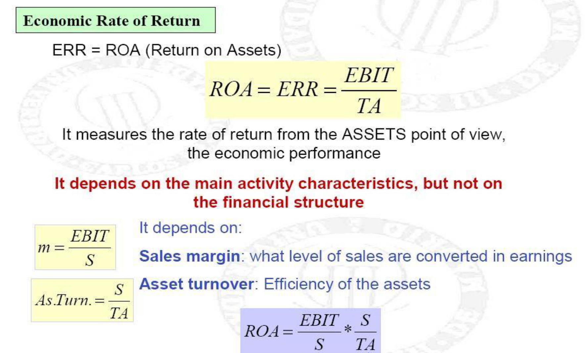
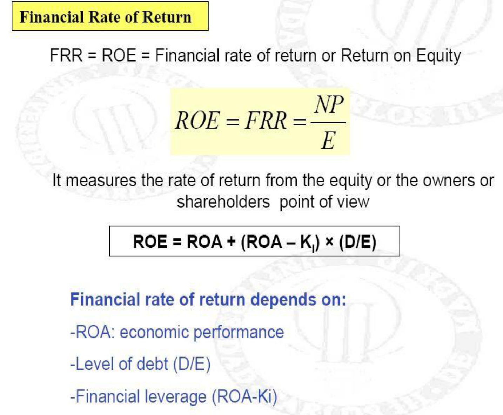
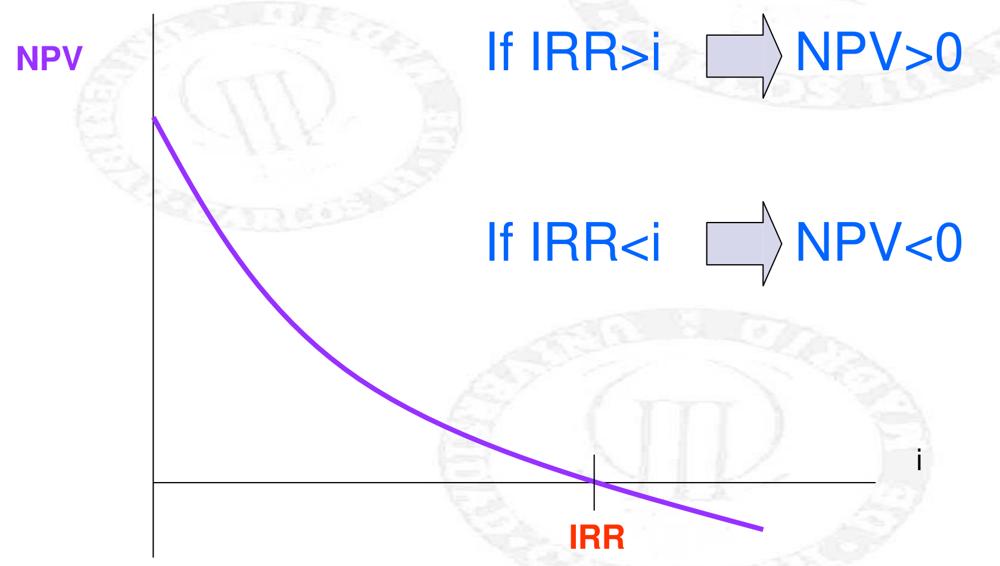
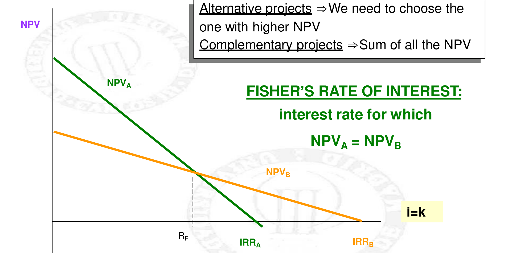

Financial Management (II): Accounting Indicators and Investment Decisions
Return on assets and return on equity, their decomposition, financial leverage, the time value of money, payback, net present value, internal rate of return and the Fisher rate.
Central idea: two ratios measure how well a firm uses its money. ROA (EBIT over total assets) is the return of the assets, whatever their financing; ROE (net profit over equity) is the return of the owners, and debt raises it only while ROA exceeds the cost of debt: $ROE = ROA + (ROA - K_i)\,D/E$. Investment decisions are judged on cash flows, the time value of money and risk: the payback period ignores the time value of money, while the NPV (accept if positive) and the IRR (accept if above the interest rate) take it into account.
The topic has two parts [Slide 2]: the accounting indicators ROA, ROE and financial leverage, and the decision of investment.
Part I — Accounting indicators
§ 1 Economic and financial structure, again [Slides 3-5]
The topic opens by recalling Topic 3 (I). The economic structure is defined by the investments of the company, the use of its financial resources in goods and rights: the assets, what is owned. The financial structure is defined by the sources of financing used to carry out those investments: equity and liabilities, what is owed [Slide 3]. Assets bring profitability, equity and liabilities carry a cost, and the objective is to maximize value, which requires profitability above cost [Slide 4].
The company therefore takes two kinds of decision [Slide 5]:
| Decision | What it is about |
|---|---|
| Financing decisions | the choice of equity or debt (internal equity or self-financing from retained earnings, external equity, debt); they cover the capital structure and the dividends |
| Investing decisions | the allocation of capital to the projects from which future profits are expected; the company invests in the projects that create value (profits > costs) |
Part I measures the result of both decisions with accounting ratios; Part II is about the investing decision.
§ 2 Basic concepts [Slide 6]
| Symbol | Meaning |
|---|---|
| $S$ | sales volume |
| $A$ (or $TA$) | total assets |
| $E$ | equity |
| $D$ | debt |
| $K_i$ (or $i$) | cost of the debt (interest rate) |
| $T$ | tax rate |
| EBIT | earnings before interest and taxes |
| PBT | profit before taxes |
| NP | net profit |
The slide links them as follows:
Interest is the cost of the debt, $K_i$ per euro of debt, so it is subtracted from EBIT before taxes are paid.
§ 3 Return on assets (ROA) [Slides 7, 9-12]
The economic rate of return (ERR), or return on assets, measures the rate of return from the assets' point of view, the economic performance [Slide 7]:

It answers the question: how much profit does the firm generate from the use of its assets? It depends on the characteristics of the main activity but not on the financial structure, because EBIT is taken before interest [Slides 7, 9]. It is usually defined before taxes, to compare firms of different countries and firms with different financing strategies [Slide 9]:
To show how the operating cycle affects it, ROA is split into two factors [Slides 7, 10]. Multiplying and dividing by the sales $S$:
- The sales margin $m = EBIT/S$ says what part of the sales is converted into earnings.
- The asset turnover $S/TA$ is the sales generated by each euro of assets, the efficiency of the assets [Slides 7, 11].
What matters in the asset turnover is its trend [Slide 11]. An improvement means efficient and creative management of the assets, but it may also reveal that some assets, especially fixed assets, are not being renewed, which can cause long-term efficiency problems. A deterioration signals poor asset management, or results from an ambitious programme of asset renewal or an aggressive policy of acquisitions.
Operating managers can therefore raise ROA in two ways [Slide 12]: by improving the profit margin $EBIT/S$ (cost control or higher revenues), or by improving the asset turnover $S/A$ (better use of capacity).
§ 4 Return on equity (ROE) [Slides 8, 13-16]
The financial rate of return (FRR), or return on equity, measures the rate of return from the point of view of the owners or shareholders [Slide 8]:

ROE measures how efficiently the firm employs the owners' capital and estimates the earnings per 100 € of invested equity. Unlike ROA, it includes the consequences of the financing policy, the way the assets are financed: this is the financial leverage [Slide 13].
ROE splits into three factors [Slide 14], again by multiplying and dividing (by $S$ and by the assets $A$):
The last factor, $A/E$, is the asset to equity ratio. These are the three levels of managerial control of ROE, and two companies may reach the same ROE through very different strategies [Slide 15]:
| Profit margin | Asset turnover | Financial leverage $A/E$ | ROE | |
|---|---|---|---|---|
| Firm A | 6 % | 0.5 | 4 | $0.06 \times 0.5 \times 4 = 12\ \%$ |
| Firm B | 2 % | 1.5 | 4 | $0.02 \times 1.5 \times 4 = 12\ \%$ |
Firm A earns a high margin on few sales per euro of assets; firm B a low margin on many.
Why maximize ROE [Slide 16]? To keep the shareholders satisfied, and to maximize the self-sustainable growth (SSG): the rate of growth a company can sustain internally without changing its financial structure $D/E$.
§ 5 Financial leverage: the link between ROA and ROE [Slides 8, 17-19]
The fundamental relationship between both ratios is [Slides 8, 17]:
where $i = K_i$ is the interest rate of the debt. The slide states it without taxes; reading it: each euro of debt earns ROA inside the firm and costs $i$, so each euro of debt leaves $ROA - i$ to the owners, and there are $D/E$ euros of debt per euro of equity.
The leverage factor depends on two elements [Slide 18]: the spread $ROA - i$ and the gearing ratio $D/E$. With no debt the factor is zero and $ROE = ROA$. With debt there are three scenarios:
| Scenario | Leverage factor | Effect on the owners |
|---|---|---|
| $ROA > i$ | positive | borrowed money is invested at a rate above its cost; $ROE > ROA$ |
| $ROA = i$ | zero | shareholders do not benefit from borrowing; $ROE = ROA$ |
| $ROA < i$ | negative | the return to the shareholders is deteriorated by the borrowed funds; $ROE < ROA$ |
Negative financial leverage comes from high interest rates together with a depressed ROA caused by rising costs, increased competition or price controls [Slide 18].
Example [Slide 19]. ROA is held at 15 % while debt grows and, with it, the interest rate the firm pays:
| $D/E$ | 0.00 | 0.11 | 0.25 | 0.43 | 0.67 | 1.00 | 1.50 | 2.33 |
|---|---|---|---|---|---|---|---|---|
| ROA | 15 % | 15 % | 15 % | 15 % | 15 % | 15 % | 15 % | 15 % |
| $i$ | 9 % | 10 % | 11 % | 12 % | 13 % | 14 % | 15 % | 16 % |
| $ROA - i$ | 6 % | 5 % | 4 % | 3 % | 2 % | 1 % | 0 % | −1 % |
| Leverage $(ROA - i)\,D/E$ | 0.00 % | 0.55 % | 1.00 % | 1.29 % | 1.34 % | 1.00 % | 0.00 % | −2.33 % |
| ROE | 15 % | 15.55 % | 16.00 % | 16.29 % | 16.34 % | 16.00 % | 15.00 % | 12.67 % |
For instance, at $D/E = 0.43$: leverage $= 0.03 \times 0.43 = 1.29\ \%$ and $ROE = 15 + 1.29 = 16.29\ \%$. More debt helps only up to a point: as the interest rate climbs towards ROA the gain shrinks, and once $i$ passes ROA debt lowers ROE below ROA.
Part II — The decision of investment
§ 6 Investment decisions [Slides 20-22]
Investment decisions shape the economic structure, the assets, which may be real or financial. Any investment project should generate enough profitability to cover, at least, the remuneration of all the resources the company uses [Slide 20].
A project is valued from three ingredients [Slide 21]: its cash flows (cash inflows − cash outflows), the time value of money and its risk. The interest rate that prices money is built as [Slide 22]:
§ 7 Notes on financial mathematics [Slides 23-24]
To capitalize is to compute the future value (FV) of an amount invested now; to discount (bring up to date) is to compute the present value (PV) of an amount received in the future [Slide 23]. For one period the compound factor is $(1+i)$ and the discount factor $1/(1+i)$; for $n$ periods [Slide 24]:
Each period multiplies the capital by $(1+i)$, so $n$ periods multiply it by $(1+i)^n$; discounting undoes that product.
Examples [Slide 24]. Future value of 1,000 € available today at $i = 5\ \%$:
Slide 24 prints $C_2 = 1.105{,}5$. The product is $1{,}000 \times 1.1025 = 1{,}102.50$ €; $C_3 = 1{,}157.63$ € (printed $1.157{,}62$, truncated) follows from it, since $1{,}102.50 \times 1.05 = 1{,}157.625$.
Present value at $i = 10\ \%$ of 5,000 € in year 4 and of 10,000 € in year 8:
§ 8 The investment project and its variables [Slides 25-26]
An investment project is a time line: an initial payment $A$ at $t = 0$ and then the cash flows $CF_1, CF_2, \dots, CF_n$, where each cash flow is the inflows minus the outflows of its period, $CF_t = C_t - P_t$ [Slide 25]. It is valued with five variables [Slide 26]:
| Variable | Meaning |
|---|---|
| $A$ | initial payment, the size of the investment |
| $C_t$ | cash inflows (collections) generated during the life of the project |
| $P_t$ | cash outflows (payments) generated during the life of the project |
| $n$ | duration or life of the project, in periods |
| $i$ | interest rate: price of money, inflation, risk |
§ 9 Payback period [Slide 27]
The payback period is the time the cash inflows need to repay the original outlay. It is obtained from the cash flows and the initial investment, and it does not take into account the time value of money. It also ignores the cash flows after the payback period and when the cash flows are generated: it is a liquidity criterion and says nothing about value creation [Slide 27].
Example [Slide 27]. Outlay 400; cash flows 100, 150, 80, 70, 20 and 50 in years 1 to 6. The slide gives the data only; accumulating the cash flows year by year:
| Year | 1 | 2 | 3 | 4 | 5 | 6 |
|---|---|---|---|---|---|---|
| Cash flow | 100 | 150 | 80 | 70 | 20 | 50 |
| Accumulated | 100 | 250 | 330 | 400 | 420 | 470 |
The accumulated inflows reach the outlay of 400 at the end of year 4, so the payback period is 4 years. The 70 received after year 4 do not change it.
§ 10 Net present value (NPV) [Slides 28-30]
The net present value of a project is the total present value of the series of cash flows it generates minus the outlay needed to carry it out. It indicates how much value the project adds to the firm, and it takes the time value of money into account [Slide 28]. Discounting each cash flow with the factor of Section 7:
The decision rule [Slide 29]:
| NPV | Decision |
|---|---|
| $NPV > 0$ | the project may be accepted |
| $NPV < 0$ | the project may be rejected |
| $NPV = 0$ | indifferent: the project adds no monetary value |
Example [Slide 30] at $i = 10\ \%$, initial payment 60 in every project:
| Project | $CF_1$ | $CF_2$ | NPV $= -60 + CF_1/1.1 + CF_2/1.21$ | Slide |
|---|---|---|---|---|
| A | 60 | 0 | $-60 + 54.55 + 0 = -5.45$ | −5.45 |
| B | 60 | 6.6 | $-60 + 54.55 + 5.45 = 0$ | 0 |
| C | 33 | 51 | $-60 + 30.00 + 42.15 = 12.15$ | 12.14 |
| D | 35 | 35 | $-60 + 31.82 + 28.93 = 0.74$ | 1.43 |
A is rejected, B is indifferent, C and D may be accepted, and C adds the most value.
Slide 30 prints NPV = 1.43 for project D. With the data of the same table, $35/1.1 + 35/1.21 = 31.818 + 28.926 = 60.744$, so $NPV_D = 0.74$. The decision (accept) does not change. Project C gives 12.15 with two-decimal rounding of each term (the slide's 12.14 is a rounding difference).
§ 11 Internal rate of return (IRR) [Slides 31-32]
The internal rate of return is the rate that makes the present value of all the cash flows of the investment, in and out, add up to zero [Slide 31]:
It is the NPV equation of Section 10 with the unknown rate in place of $i$. The decision rule compares it with the interest rate [Slide 31]:
| IRR | Decision |
|---|---|
| $IRR > i$ | the project may be accepted |
| $IRR < i$ | the project may be rejected |
| $IRR = i$ | indifferent |
The NPV of a project with an outlay followed by positive cash flows falls as the interest rate grows, because each term $CF_t/(1+i)^t$ shrinks, and it crosses zero exactly at the IRR [Slide 32]. Hence both rules agree for one project: if $IRR > i$ then $NPV > 0$, and if $IRR < i$ then $NPV < 0$.

§ 12 Comparing projects: the Fisher rate [Slide 33]
When there are several projects [Slide 33]:
- Alternative projects (only one can be carried out): choose the one with the higher NPV.
- Complementary projects (they can all be carried out): the value added is the sum of all the NPVs.
The NPV lines of two projects A and B may cross. The Fisher rate of interest $R_F$ is the interest rate for which $NPV_A = NPV_B$. On one side of $R_F$ one project has the higher NPV, on the other side the other one, so the ranking of alternative projects depends on the interest rate $i = k$ at which they are discounted; the project with the higher IRR is not necessarily the one with the higher NPV.
